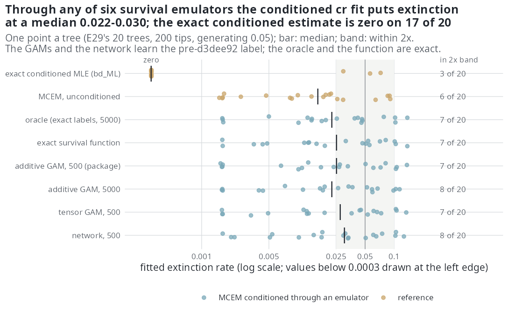
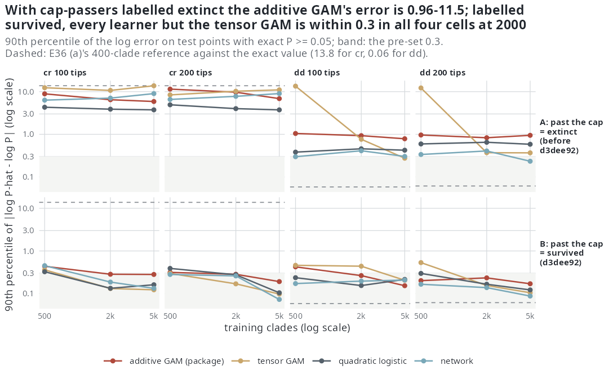

E36 — how well does the survival emulator do, and should a network replace the GAM?
| Status | (a) ran to completion, its reference mislabelled for cr (found by E36c), and is superseded by E43; (b) ran to completion with no analysis script and no numbers file and is closed as historical: E45 answers its question with the exact survival function; E36c complete and holds |
| Package build | (a) and E36c emphasis f30a791; (b) emphasis f92cc2f (the package's survival GAM with the pre-d3dee92 label) |
| Driver / analysis | sim/E36-emulator.R; sim/E36-downstream.R; sim/E36c-exact.R, sim/E36c-survival.cpp |
| Data | (a) results/E36/cells/{ref,n200}-{cr,dd,ned,nk}.csv (12 rows each) and -test.csv (200 points); merged as results/E36/emulator.csv (96 rows), not in the repository; (b) results/E36/downstream.csv (120 rows); E36c results/E36c/summary.csv (96 rows), results/E36c/cells/*-pred.csv, *-truth.csv |
Question
Conditioning on survival (E34) rests on \(\hat P_{\text{tree}}(\theta)\), which auto_bounds() estimates from one simulated clade at each of 500 points of the box and a GAM additive on the logit scale (\(s(\beta_0) + s(\gamma_0) + \dots\), no interaction), while survival depends on the rates jointly. E34 also left a gap: on E29's trees the cr fit conditioned through that GAM put extinction at 0.028 where the exact conditioned likelihood puts it at zero. E36 measures the emulator and its effect downstream.
Design
(a) Accuracy against a Monte Carlo reference.
| setting | value |
|---|---|
| models x cells | cr, dd, ned, nk x ref (100 tips) and n200 (200 tips) = 8 cells; one tree of the cell gives the box through auto_bounds() |
| test points | 200 held-out points of the box, survival measured by 400 clades each (binomial SE ≤ 0.025) |
| training sets | 500, 2000, 5000 points with one clade each, nested |
| learners | additive GAM (the package's); GAM with tensor smooths on every pair; logistic regression on parameters, squares and products; nnet, one hidden layer of 8 units, weight decay by 5-fold CV |
| read on | test points with true survival ≥ 0.05: median and 90th percentile of \(\lvert\log\hat P - \log P\rvert\), log-loss, calibration slope, training time |
(b) Downstream, where the exact answer exists. E29's 20 ned trees fitted with cr by MCEM at E29's budget (300 draws, 300 iterations, 16-hour clock), conditioned through emulators trained on the tree's own box: an oracle (tensor GAM on 5000 points labelled with the exact crown survival \(p(0)^2\) of the constant-rate process); the package's additive GAM on 500 clades; the tensor GAM on 500; the additive GAM on 5000; the network on 500; and the exact survival function itself, passed as a function. Beside them the exact conditioned MLE (bd_ML, cond = 1) and E29's unconditioned MCEM cr fit. The emulators other than the oracle and the function are trained with the label status == "done", so a clade that passes the lineage cap counts as extinct (the label E36c later found defective).
Pre-set rule
- A learner at a training size is adequate in a cell if its median \(\lvert\log\hat P - \log P\rvert \le 0.1\) and its 90th percentile ≤ 0.3 (\(\log\hat P\) enters the objective with unit weight).
- The network replaces the GAM if at 500 points it is adequate in at least 6 of the 8 cells where the additive GAM is not, or its median error is below the additive GAM's by 30% or more in at least 6 of 8; the tensor GAM is read by the same rule.
- The package's training size is the smallest at which the recommended learner is adequate in all 8 cells; if none, the largest tested, reported as such.
- (b) An emulator is adequate downstream if its extinction rate is within 0.01 of the oracle's on ≥ 80% of trees; the oracle's distance from the exact conditioned MLE is reported as what MCEM adds.
- (b) If the oracle sits within 0.01 of the exact conditioned estimate on ≥ 80% of trees and the additive GAM on 500 does not, E34's 0.028 is emulator error; if the oracle does not either, Monte Carlo error of the fit.
Results
(a) Against the Monte Carlo reference
The reference was mislabelled. E36 (a)'s 400-clade reference counted a clade that passed the lineage cap as extinct. Against the exact survival probability (E36c, below) its 90th-percentile log error is 13.8 for cr and 0.06 for dd. The cr cells of E36 (a) measured the wrong probability and their numbers are not quoted here. The dd cells are usable; the ned and nk cells have no exact reference and carry the same mislabel in an unknown share.
On the six cells other than cr (emulator.csv; training survival share 0.25 to 0.33):
- No learner is adequate in any of them at any training size (500, 2000 or 5000).
- At 500 clades the additive GAM's 90th percentile is 1.03 / 1.63 (
dd, 100 / 200 tips), 1.35 / 2.21 (ned), 0.84 / 1.72 (nk); the network's 0.56 / 0.54, 0.54 / 0.75, 0.80 / 0.68. - Rule (2), second clause: the network's median error at 500 is below the additive GAM's by 38% to 65% in five of the six cells and by 13% in
n200-ned. With the twocrcells unreadable the rule's 6-of-8 count cannot be formed as registered, so rule (2) is not evaluable; rule (3) is not either.
The figure the status report drew from these files (fig-status-emulator) rests on the mislabelled reference and is not reproduced.
(b) Downstream on E29's trees
Computed directly from downstream.csv (no analysis script exists); every fit converged with 300 effective draws.
| emulator | median \(\hat{\mu}\) | within 2x of 0.05 | within 0.01 of the oracle | within 0.01 of the exact conditioned MLE | median \(\lvert p_{\text{emul}} - p_{\text{exact}}\rvert\) at the estimate |
|---|---|---|---|---|---|
| oracle | 0.0225 | 7 of 20 | 20 | 4 | 0.000 |
| exact survival function | 0.0253 | 7 | 16 | 5 | 0 |
| additive GAM, 500 (package) | 0.0252 | 7 | 14 | 5 | 0.079 |
| additive GAM, 5000 | 0.0226 | 8 | 14 | 6 | 0.049 |
| tensor GAM, 500 | 0.0276 | 7 | 15 | 5 | 0.034 |
| network, 500 | 0.0304 | 8 | 15 | 5 | 0.051 |
The exact conditioned MLE is zero (median \(3\times 10^{-14}\); below 0.005 on 17 of 20); the unconditioned MCEM cr fit a median 0.0161 (6 of 20 in the band).

Rule (4): no emulator reaches 80% (14 to 16 of 20). The exact survival function itself is within 0.01 of the oracle on only 16 of 20, so two conditioned MCEM fits with exact survival differ by more than 0.01 on a fifth of these trees: the threshold sits below the run-to-run spread and cannot separate emulators here. Rule (5): the oracle is within 0.01 of the exact conditioned estimate on 4 of 20, so by the design's wording E34's 0.028 is Monte Carlo error of the fit, not emulator error. Part (b) was not rerun after d3dee92.
E36c — the emulators against the exact survival probability; the label defect
Question. E36 (a)'s 400-clade reference carries its own error (about ±0.025 absolute, ±20% in log terms near 0.05). For cr and dd the probability that both crown lineages leave a descendant at T is computable exactly.
Design. For cr in closed form, \(p(0)^2\) with \(p(0) = d/\big(d e^{-dT} + \lambda(1 - e^{-dT})\big)\), \(d = \lambda - \mu\). For dd from the master equation of the pair of crown subclade sizes \((n_1, n_2)\) under \(\lambda(N), \mu(N)\) exponential in \(N = n_1 + n_2\), fourth-order Runge-Kutta, the state space truncated at \(N_{hi}\) with the escaping mass kept apart so the probability is bracketed; \(N_{hi}\) raised 400 → 800 → 1600 until the bracket is within 1% of the probability, otherwise the point is left out. Checked before the run: with the N slopes at zero the solver reproduces the cr formula to six decimals on four points, and on dd points it falls inside the 95% interval of 20,000 simulated clades. The 200 test points of E36 (a) in ref and n200, for cr and dd; training sets 500, 2000, 5000; the four learners; two labels for training clades: A, the package's (a run that passes the lineage cap of auto_bounds(), 20 x tips, counts as extinct) and B (it counts as survived, as the conditional likelihood requires). Read on test points with exact P ≥ 0.05.
Pre-set rule. (1) E36's adequacy. (2) The package uses the learner, rule and smallest size adequate in all four cells; if none, the one with the smallest largest 90th percentile, reported as not adequate. (3) The error of E36 (a)'s reference against the exact value is reported per cell and E36 (a)'s cr and dd verdicts re-read. (4) If B is adequate where A is not, the package's label is reported as a defect of the emulator's target.
Results (summary.csv; log results/E36c.log):
- Exact value on all 200 points for
cr; on 106 and 126 of 200 forddat 100 and 200 tips (the rest grow past the truncation). Points with P ≥ 0.05 read:cr121 / 125,dd63 / 82. - 13% to 16% of training clades pass the cap (0.164, 0.151 for
cr; 0.130, 0.129 fordd). - Rule A, additive GAM at 500: 90th percentile 8.89 (
cr100 tips), 11.47 (cr200), 1.05 (dd100), 0.96 (dd200). Under A no learner is adequate in more than one of the four cells at any size. - Rule B, additive GAM at 500: 0.44, 0.31, 0.42, 0.20. At 2000 every learner but the tensor GAM is adequate in all four cells (largest 90th percentile 0.26 to 0.28: additive GAM 0.28, quadratic logistic 0.28, network 0.26); the tensor GAM fails
ddat 100 tips (0.44). The network is adequate in three cells at 500 (failscr100 tips, 0.45). - E36 (a)'s 400-clade reference against the exact value: 90th percentile 13.8 (
cr, both cells), 0.061 and 0.058 (dd, 200 and 100 tips).

cr errors run from 3 to 13 whatever the learner or training size, and E36 (a)'s own reference (dashed) is off by 13.8 in the same cells. Bottom row, a clade past the cap counted as survived: every learner falls toward or inside the 0.3 band by 2000 clades.Conclusion (E36c). By rule (4) the package's label was a defect of the emulator's target: under A no learner is adequate in more than one cell, under B three learners are adequate in all four at 2000 clades. By rule (2) the additive GAM, label B, 2000 clades, is adequate in all four cells and is the smallest adequate size for the package's own learner. Emphasis d3dee92 labels clades that pass the cap as survived and trains the GAM on 2000 clades (R/gam.R: survived <- ... s$status %in% c("done", "too_large")). By rule (3), E36 (a)'s cr verdicts measured the wrong probability; its dd reference is within 0.06 of the exact value, so its dd reading (no learner adequate, all trained under label A) stands. E34r reruns E34 (b) under d3dee92.
Conclusion
(a) As registered, not evaluable: the cr cells were scored against a mislabelled reference, so neither the 6-of-8 count of rule (2) nor rule (3) can be formed; on the six readable cells no learner is adequate at any size, and the network's median error is 38-65% below the additive GAM's in five. E36c replaces (a) for cr and dd and identifies the cause as the training label rather than the learner. (b) Rule (4): no emulator adequate downstream, but the threshold of 0.01 is below the Monte Carlo spread of a conditioned fit on these trees, which the exact survival function itself shows. Rule (5): E34's 0.028 is Monte Carlo error of the fit, in a likelihood that is flat over [0, 0.1] on these trees (E32 (a), E38). The conditioning machinery is not what keeps the extinction estimate from the generating value at 200 tips and turnover 0.10.
(b) is closed: it ran with the package's survival GAM before d3dee92, and E45 answers its question exactly, fitting the conditioned cr and dd likelihoods through the exact survival function against the exact conditioned MLE. (a) is replaced by E43, which measures each emulator against a 20000-clade Monte Carlo reference and across 20 trainings.